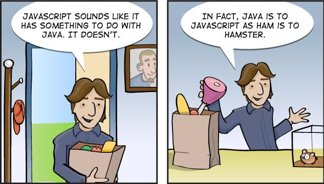

JavaScript 有着很奇怪的命名史。
1995 年，它作为网景浏览器（Netscape Navigator）的一部分首次发布，网景给这个新语言命名为 LiveScript。一年后，为了搭上当时媒体热炒 Java 的顺风车，临时改名为了 JavaScript （当然，Java 和 JavaScript 的关系，就和雷锋和雷锋塔一样 —— 并没有什么关系）

歪果仁的笑话怎么一点都不好笑
译者注：wikipedia 的 JavaScript 词条 更详细的叙述了这段历史
1996 年，网景将 JavaScript 提交给 ECMA International（欧洲计算机制造商协会） 进行标准化，并最终确定出新的语言标准，它就是 ECMAScript。自此，ECMAScript 成为所有 JavaScript 实现的基础，不过，由于 JavaScript 名字的历史原因和市场原因（很显然 ECMAScript 这个名字并不令人喜欢……），现实中我们只用 ECMAScript 称呼标准，平时都还是使用 JavaScript 来称呼这个语言。
术语（译者注）：
- 标准（Standard）： 用于定义与其他事物区别的一套规则
- 实现（Implementation）： 某个标准的具体实施/真实实践
不过，JavaScript 开发者们并不怎么在乎这些，因为在诞生之后的 15 年里，ECMAScript 并没有多少变化，而且现实中的很多实现都已经和标准大相径庭。其实在第一版的 ECMAScript 发布后，很快又跟进发布了两个版本，但是自从 1999 年 ECMAScript 3 发布后，十年内都没有任何改动被成功添加到官方规范里。取而代之的，是各大浏览器厂商们争先进行自己的语言拓展，web 开发者们别无选择只能去尝试并且支持这些 API。即使是在 2009 年 ECMAScript 5 发布之后，仍然用了数年这些新规范才得到了浏览器的广泛支持，可是大部分开发者还是写着 ECMAScript 3 风格的代码，并不觉得有必要去了解这些规范。
译者注：ECMAScript 第四版草案由于太过激进而被抛弃，Adobe 的 ActionScript 3.0 是 ECMAScript edition 4 的唯一实现（ Flash 差点就统一 Web 了）
到了 2012 年，事情突然开始有了转变。大家开始推动停止对旧版本 IE 浏览器的支持，用 ECMAScript 5 (ES5) 风格来编写代码也变得更加可行。与此同时，一个新的 ECMAScript 规范也开始启动。到了这时，大家开始逐渐习惯以对 ECMAScript 规范的版本支持程度来形容各种 JavaScript 实现。在正式被指名为 ECMAScript 第 6 版 (ES6) 之前，这个新的标准原本被称为 ES.Harmony（和谐）。2015 年，负责制定 ECMAScript 规范草案的委员会 TC39 决定将定义新标准的制度改为一年一次，这意味着每个新特性一旦被批准就可以添加，而不像以往一样，规范只有在整个草案完成，所有特性都没问题后才能被定稿。因此，ECMAScript 第 6 版在六月份公布之前，又被重命名为了 ECMAScript 2015（ES2015）
目前，仍然有很多新的 JavaScript 特性或语法正在提议中，包括 decorators（装饰者），async-await（async-await 异步编程模型） 和 static class properties（静态类属性）。它们通常被称为 ES7，ES2016 或者 ES.Next 的特性，不过实际上它们只能被称作提案或者说可能性，毕竟 ES2016 的规范还没有完成，有可能全部都会引入，也有可能一个都没有。TC39 把一个提案分为 4 个阶段，你可以在 Babel 的官网 上查看各个提案目前都在哪个阶段了。
所以，我们该如何使用这一大堆术语呢？下面的列表或许能帮助到你：
- ECMAScript：一个由 ECMA International 进行标准化，TC39 委员会进行监督的语言。通常用于指代标准本身。
- JavaScript：ECMAScript 标准的各种实现的最常用称呼。这个术语并不局限于某个特定版本的 ECMAScript 规范，并且可能被用于任何不同程度的任意版本的 ECMAScript 的实现。
- **ECMAScript 5 (ES5)**：ECMAScript 的第五版修订，于 2009 年完成标准化。这个规范在所有现代浏览器中都相当完全的实现了。
- **ECMAScript 6 (ES6) / ECMAScript 2015 (ES2015)**：ECMAScript 的第六版修订，于 2015 年完成标准化。这个标准被部分实现于大部分现代浏览器。可以查阅这张兼容性表来查看不同浏览器和工具的实现情况。
- ECMAScript 2016：预计的第七版 ECMAScript 修订，计划于明年夏季发布。这份规范具体将包含哪些特性还没有最终确定
- ECMAScript Proposals：被考虑加入未来版本 ECMAScript 标准的特性与语法提案，他们需要经历五个阶段：Strawman（稻草人），Proposal（提议），Draft（草案），Candidate（候选）以及 Finished （完成）。
在这整个 Blog 中，我将把目前的 ECMAScript 版本称作 ES6（因为这是大部分开发者最习以为常的），把明年的规范称作 ES2016（因为，与 ES6/ES2015 不同，这个名字将在整个标准化过程中沿用）并且将那些还没有成为 ECMAScript 定稿或草案的未来语言概念称为 ECMAScript 提案或者 JavaScript 提案。我将尽我所能在任何可能引起困惑的场合沿用这篇文章。
一些资源
- TC39 的 Github 仓库上可以看到所有目前公开的提案
- 如果你还不熟悉 ES6，Babel 有一个很不错的特性概览
- 如果你希望深入 ES6，这里有两本很不错的书： Axel Rauschmayer 的 Exploring ES6和 Nicholas Zakas 的 Understanding ECMAScript 6。Axel 的博客 2ality 也是很不错的 ES6 资源
著作权声明
本文译自 ES5, ES6, ES2016, ES.Next: What’s going on with JavaScript versioning?
译者 黄玄，首次发布于 Hux Blog，转载请保留以上链接
- Post title：Example Post
- Post author：Neil Yang
- Create time：2018-12-31 00:00:00
- Post link：https://des86532.github.io/2018/12/31/example/exmaple-post/
- Copyright Notice：All articles in this blog are licensed under BY-NC-SA unless stating additionally.